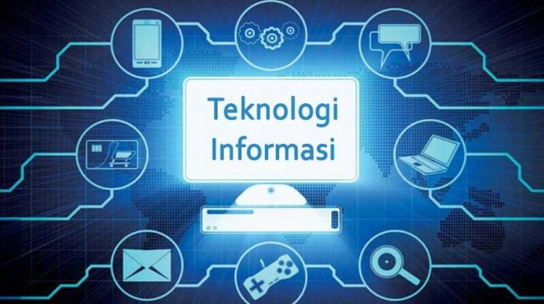

Pengertian Teknologi Informasi
Teknologi Informasi memiliki beberapa definisi. Teknologi Informasi (TI), atau dalam bahasa Inggris dikenal dengan istilah Information technology (IT) adalah istilah umum yang menjelaskan teknologi apa pun yang membantu manusia dalam membuat, mengubah, menyimpan, mengkomunikasikan dan/atau menyebarkan informasi. Mengemukakan bahwa TI adalah seperangkat alat yang membantu bekerja dengan informasi dan melakukan tugas-tugas berhubungan dengan pemrosesan informasi (Hagg & Ken). Teknologi Informasi terdiri dari teknologi komputer (hardware dan software) untuk memproses dan menyimpan informasi dan teknologi dengan tujuan mengirimkan suatu informasi (Martin, 1999).
Teknologi Informasi menyatukan komputasi dan komunikasi berkecepatan tinggi untuk data, suara, dan video. Contoh dari Teknologi Informasi bukan hanya berupa komputer pribadi, tetapi juga telepon, TV, peralatan rumah tangga elektronik, dan peranti genggam modern (misalnya ponsel) (William dan Sawyer, 2007). Menurut kamus oxford Teknologi Informasi adalah studi atau peralatan elektronika, terutama komputer, untuk menyimpan, menganalisa, dan mendistribusikan informasi apa saja, termasuk kata-kata, bilangan, dan gambar.
Dalam kamus IT disebutkan bahwa Teknologi Informasi merupakan pengolahan, penyimpanan dan penyebaran vokal, informasi bergambar, teks dan numerik oleh mikroelektronika berbasis kombinasi komputasi dan telekomunikasi. Dapat disimpulkan bahwa Teknologi Informasi adalah alat atau perangkat tertentu yang bisa membantu manusia untuk mengolah, mengorganisasikan data atau pesan untuk di sampaikan kepada objek yang di tuju.
Komponen Teknologi Informasi
- Hardware (Perangkat Keras)
- Software (Perangkat lunak)
- Brainware (Kecerdasan yang ada pada manusia/pengguna)
- Data, informasi, dan pengetahuan
Fungsi Teknologi Informasi
| No | Fungsi | Deskripsi |
|---|---|---|
| 1 | Menangkap (Capture) | Departemen TI dapat menyusun catatan terperinci dari berbagai kegiatan. Misalnya, terima input dari keyboard, pemindai, mikrofon, dan lainnya. |
| 2 | Mengolah (Processing) | Departemen TI dapat memproses input data yang diterima yang kemudian dikonversi menjadi informasi baru. Pemrosesan data ini dapat berupa konversi, analisis, perhitungan, untuk menggabungkan berbagai bentuk informasi |
| 3 | Menghasilkan (Generating) | Departemen TI akan menghasilkan atau mengatur informasi dalam bentuk yang bermanfaat. Misalnya, grafik, tabel, perhitungan, dll |
| 4 | Penyimpanan (Storage) | Departemen TI menyimpan informasi dan data ke media yang kemudian dapat digunakan untuk tujuan lain. Misalnya, data disimpan pada hard drive, CD dan hard drive |
| 5 | Memcari kembali (Retrival) | Departemen TI dapat menemukan dan melacak informasi dan data yang telah disimpan. Misalnya, cari data pelanggan yang belum melakukan pembayaran. |
| 6 | Sebagai Transmisi (Transmission) | Departemen TI dapat dan informasi dari satu lokasi ke lokasi lain menggunakan jaringan komputer. Misalnya, mengirim data penjualan ke tim lain di lokasi yang berbeda. |